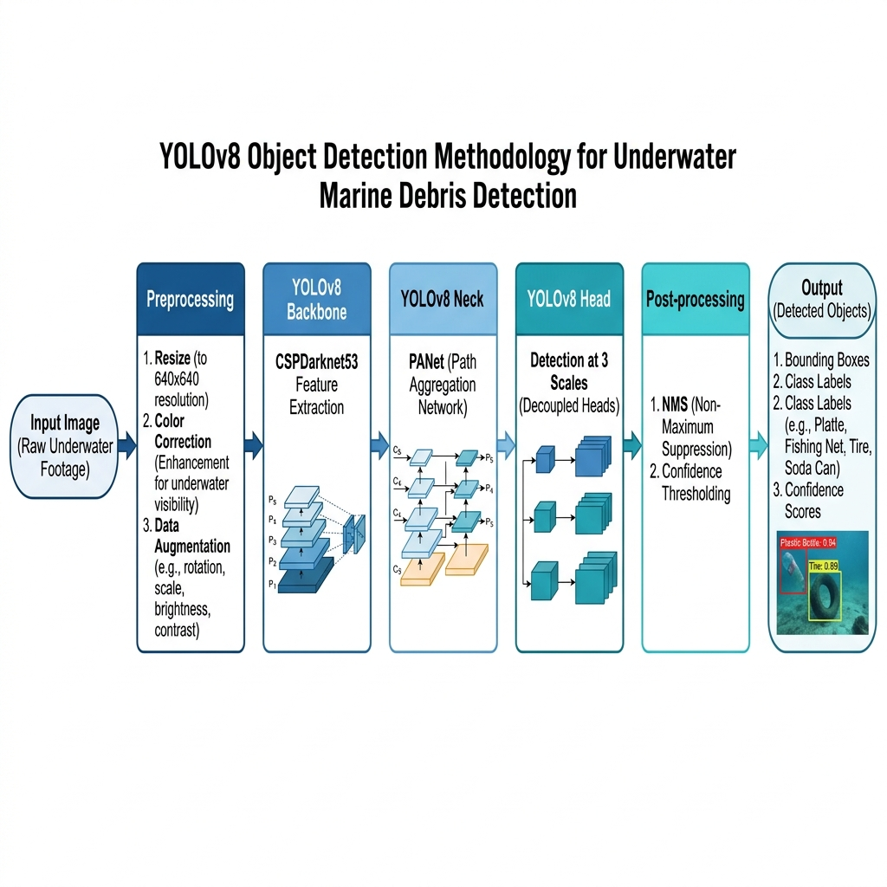
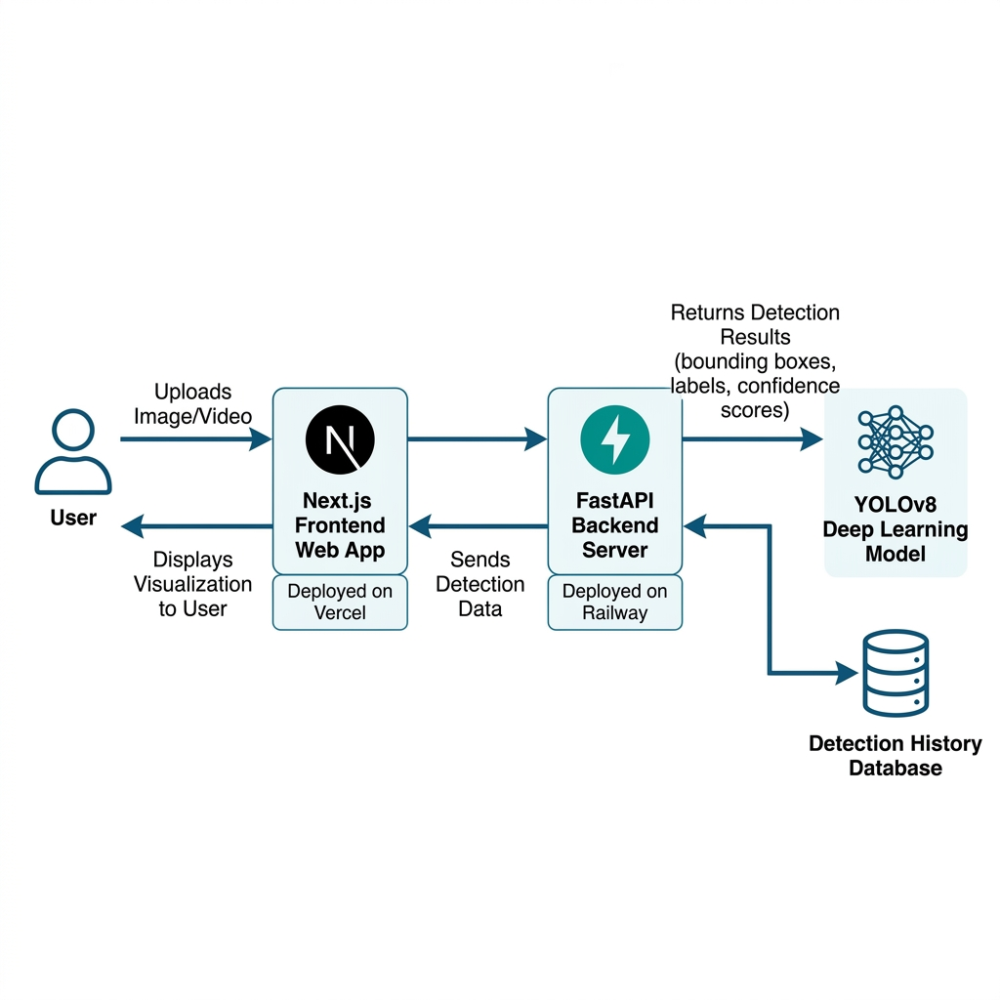

Mata Kuliah: Pengolahan Citra Digital — Tahun Ajaran Genap 2025/2026
"OceanGuard: Sistem Deteksi dan Klasifikasi Sampah Laut Berbasis Deep Learning Menggunakan YOLOv8"
Indonesia sebagai negara maritim terbesar di dunia memiliki garis pantai sepanjang lebih dari 108.000 km dan luas perairan mencapai 6,4 juta km². Namun, kekayaan maritim ini menghadapi ancaman serius dari pencemaran sampah laut (marine debris). Berdasarkan data dari Kementerian Lingkungan Hidup dan Kehutanan (KLHK), Indonesia menghasilkan sekitar 7,8 juta ton sampah plastik per tahun, di mana sekitar 4,9 juta ton di antaranya tidak terkelola dengan baik dan berpotensi masuk ke laut. Kondisi ini menempatkan Indonesia sebagai salah satu penyumbang sampah laut terbesar di dunia.
Pencemaran sampah laut memberikan dampak negatif yang sangat besar terhadap ekosistem maritim. Sampah plastik yang terakumulasi di dasar laut dan pesisir pantai dapat merusak habitat terumbu karang, mengancam kehidupan biota laut, serta mengganggu aktivitas perikanan dan pariwisata bahari. Lebih jauh lagi, mikroplastik yang terbentuk dari degradasi sampah plastik dapat masuk ke dalam rantai makanan dan berpotensi membahayakan kesehatan manusia.
Upaya monitoring dan pembersihan sampah laut secara manual memiliki keterbatasan yang signifikan, baik dari segi waktu, tenaga, maupun biaya. Penyelam dan relawan memerlukan waktu yang lama untuk menyurvei area perairan yang luas, sementara kondisi bawah laut seperti visibility yang rendah, arus, dan kedalaman menjadi tantangan tersendiri. Oleh karena itu, diperlukan solusi berbasis teknologi yang mampu mendeteksi dan mengklasifikasi sampah laut secara otomatis dan efisien.
Kemajuan dalam bidang computer vision dan deep learning membuka peluang untuk mengatasi permasalahan ini. Model object detection berbasis deep learning, khususnya YOLO (You Only Look Once), telah menunjukkan performa yang sangat baik dalam mendeteksi objek secara real-time. YOLOv8, sebagai versi terbaru dari keluarga YOLO yang dikembangkan oleh Ultralytics, menawarkan peningkatan signifikan dalam hal akurasi, kecepatan inferensi, dan kemudahan penggunaan dibandingkan versi-versi sebelumnya (Zhu et al., 2024).
Beberapa penelitian terbaru telah menunjukkan keberhasilan penggunaan YOLOv8 untuk deteksi sampah laut. Akilandeswari et al. (2024) menggunakan YOLOv8 pada dataset TrashCan dan berhasil mencapai akurasi tinggi dalam mendeteksi berbagai jenis sampah bawah laut. Penelitian lain oleh Kundu (2025) mengintegrasikan Multi-Level CNN dengan YOLOv8 untuk meningkatkan efisiensi deteksi pada dataset Seaclear. Hasil-hasil ini membuktikan bahwa pendekatan deep learning berbasis YOLOv8 sangat potensial untuk diimplementasikan dalam sistem deteksi sampah laut.
Berdasarkan permasalahan dan peluang tersebut, proyek ini bertujuan untuk membangun sebuah aplikasi web bernama "OceanGuard" yang mampu mendeteksi dan mengklasifikasi sampah laut dari gambar atau video menggunakan model YOLOv8. Aplikasi ini diharapkan dapat menjadi alat bantu yang efektif bagi peneliti, lembaga konservasi, dan masyarakat umum dalam upaya monitoring dan penanganan pencemaran sampah di perairan Indonesia.
Proyek ini menggunakan dataset yang bersumber dari platform publik yang telah diakui dalam komunitas riset computer vision. Dataset utama yang digunakan adalah Seaclear Marine Debris Dataset dan Trash-ICRA19, yang merupakan dataset terbesar dan paling komprehensif untuk deteksi sampah bawah laut.
| No | Nama Dataset | Sumber | Jumlah Gambar | Anotasi | Link |
|---|---|---|---|---|---|
| 1 | Seaclear Marine Debris Detection and Segmentation | Kaggle (TU Delft) | 8,610 | Bounding Box & Instance Segmentation (40 kategori) | Cari di Kaggle: "seaclear marine debris" |
| 2 | Underwater Trash Detection (Trash-ICRA19) | Kaggle (J-EDI) | 5,700 | Bounding Box | Cari di Kaggle: "underwater trash detection" |
| 3 | Marine Debris Detection | Roboflow Universe | Bervariasi | Bounding Box (YOLO format, siap pakai) | universe.roboflow.com |
Catatan: Dataset dapat diakses melalui link pencarian di atas. Untuk Roboflow Universe, dataset sudah tersedia dalam format YOLO dan dapat langsung diunduh beserta anotasinya. Sumber dataset wajib dicantumkan dalam laporan dan paper akhir.
Berdasarkan analisis dataset, objek sampah laut yang akan dideteksi dikategorikan ke dalam kelas-kelas berikut:
| No | Kategori | Deskripsi | Contoh Objek |
|---|---|---|---|
| 1 | Plastik (Plastic) | Potongan plastik, kemasan makanan, bungkus | Bungkus snack, plastik wrap, potongan plastik |
| 2 | Botol (Bottle) | Botol plastik dan kaca | Botol air mineral, botol soda, botol kaca |
| 3 | Kaleng (Can) | Kaleng logam | Kaleng minuman, kaleng makanan |
| 4 | Jaring (Net/Rope) | Jaring ikan, tali, fishing line | Jaring ikan bekas, tali tambang, senar |
| 5 | Kantong Plastik (Bag) | Kantong plastik / tas plastik | Kresek, kantong belanja, tas plastik |
| 6 | Lainnya (Others) | Styrofoam, karet, kain, dan material lainnya | Styrofoam box, sandal, ban, kain |
| Subset | Proporsi | Jumlah (Estimasi) | Kegunaan |
|---|---|---|---|
| Training Set | 70% | ~5,048 | Melatih model YOLOv8 |
| Validation Set | 15% | ~1,082 | Validasi selama pelatihan untuk menghindari overfitting |
| Test Set | 15% | ~1,082 | Evaluasi akhir performa model |
Proyek ini menggunakan metode object detection berbasis deep learning dengan arsitektur YOLOv8 (You Only Look Once version 8) yang dikembangkan oleh Ultralytics. YOLOv8 merupakan model state-of-the-art yang menggabungkan kecepatan inferensi tinggi dengan akurasi deteksi yang sangat baik, sehingga sangat cocok untuk aplikasi deteksi sampah laut secara real-time.
Arsitektur YOLOv8 terdiri dari tiga komponen utama:

Gambar 1. Diagram alur metode deteksi menggunakan YOLOv8
| No | Tahapan | Deskripsi | Tools/Library |
|---|---|---|---|
| 1 | Data Collection | Mengumpulkan dataset citra sampah bawah laut dari sumber publik (Kaggle, Roboflow) | Kaggle API, Roboflow API |
| 2 | Data Preprocessing | Resize gambar (640×640), normalisasi, konversi format anotasi ke YOLO format | OpenCV, Python PIL |
| 3 | Data Augmentation | Menambah variasi data menggunakan teknik: rotasi, flipping, perubahan brightness/contrast, mosaic augmentation | Albumentations, Ultralytics built-in augmentation |
| 4 | Model Training | Fine-tuning YOLOv8 pretrained model (COCO) pada dataset sampah laut menggunakan transfer learning | Ultralytics YOLOv8, PyTorch, Google Colab GPU |
| 5 | Model Evaluation | Evaluasi performa menggunakan metrik: mAP@50, mAP@50:95, Precision, Recall, F1-Score | Ultralytics validation, matplotlib |
| 6 | Model Optimization | Optimasi model dengan hyperparameter tuning, model pruning, dan export ke format ONNX untuk inferensi lebih cepat | Ultralytics export, ONNX Runtime |
| 7 | Deployment | Integrasi model ke dalam backend API dan deploy ke platform hosting gratis | FastAPI, Next.js, Vercel, Railway |
| Parameter | Nilai | Keterangan |
|---|---|---|
| Model | YOLOv8n / YOLOv8s | Nano/Small variant untuk keseimbangan akurasi dan kecepatan |
| Input Size | 640 × 640 piksel | Ukuran standar input YOLOv8 |
| Epochs | 100 – 200 | Dengan early stopping (patience=20) |
| Batch Size | 16 | Disesuaikan dengan kapasitas GPU |
| Learning Rate | 0.01 (initial) | Menggunakan cosine annealing scheduler |
| Optimizer | AdamW | Optimizer default YOLOv8 |
| Pretrained Weights | COCO (yolov8n.pt / yolov8s.pt) | Transfer learning dari model yang sudah dilatih pada COCO dataset |
Aplikasi OceanGuard dibangun dengan arsitektur client-server yang terdiri dari tiga komponen utama: frontend (Next.js), backend (FastAPI), dan machine learning model (YOLOv8). Berikut adalah gambaran arsitektur sistem secara keseluruhan:

Gambar 2. Arsitektur sistem aplikasi OceanGuard
| Komponen | Teknologi | Alasan Pemilihan |
|---|---|---|
| ML Model | YOLOv8 (Ultralytics) | State-of-the-art object detection dengan inferensi cepat dan akurasi tinggi |
| Backend API | FastAPI (Python) | Framework asynchronous yang cepat, auto-generate API documentation (Swagger), dan kompatibel dengan library ML Python |
| Frontend | Next.js (React) | Framework modern dengan SSR (Server-Side Rendering), optimasi performa bawaan, dan ekosistem yang luas |
| Styling | Tailwind CSS | Utility-first CSS framework untuk desain responsif dan modern |
| Deployment Frontend | Vercel | Platform hosting gratis untuk Next.js dengan CDN global |
| Deployment Backend | Railway / Render | Platform hosting gratis yang mendukung Python dan Docker |
| No | Nama Anggota | NIM | Peran | Tugas & Tanggung Jawab |
|---|---|---|---|---|
| 1 | [Nama Anggota 1] | [NIM] | Data & ML Engineer |
|
| 2 | [Nama Anggota 2] | [NIM] | Backend Developer |
|
| 3 | [Nama Anggota 3] | [NIM] | Frontend Developer |
|
Catatan: Seluruh anggota kelompok bertanggung jawab secara kolektif terhadap penulisan laporan jurnal, pembuatan presentasi, dan memahami keseluruhan sistem. Pembagian tugas bersifat fleksibel dan dapat disesuaikan sesuai kebutuhan.
| No | Minggu ke- | Tanggal | Fase | Deliverables |
|---|---|---|---|---|
| 1 | Minggu 11 | 23 Mei 2026 | Proposal & Dataset |
|
| 2 | Minggu 12 | 29 Mei 2026 | Progress Model & Simulasi |
|
| 3 | Minggu 13 | 4 Juni 2026 | Finalisasi Sistem |
|
| 4 | Minggu 14–15 | 11 & 18 Juni 2026 | Presentasi Proyek |
|
Laporan akhir proyek ini akan disusun mengikuti template jurnal nasional terakreditasi. Berikut adalah target jurnal yang dipertimbangkan:
| No | Nama Jurnal | Penerbit | Akreditasi | Biaya | Status |
|---|---|---|---|---|---|
| 1 | JTIIK (Jurnal Teknologi Informasi dan Ilmu Komputer) | Universitas Brawijaya | SINTA 2 | Gratis | Target Utama |
| 2 | JUTI (Jurnal Ilmiah Teknologi Informasi) | ITS Surabaya | SINTA 2 | Gratis | Alternatif 1 |
| 3 | JSI (Jurnal Sistem Informasi) | Universitas Indonesia | SINTA 2 | Gratis | Alternatif 2 |
Target utama adalah JTIIK (Jurnal Teknologi Informasi dan Ilmu Komputer) dari Universitas Brawijaya karena relevansi topik yang tinggi dengan scope jurnal, akreditasi SINTA 2, dan kebijakan publikasi gratis.
[1] Akilandeswari, A., et al. (2024). "Deep Learning Framework for Underwater Trash Detection using YOLOv8." International Journal of Advanced Research. Retrieved from Scribd.
[2] Zhu, X., et al. (2024). "YOLOv8-C2f-Faster-EMA: An Improved Underwater Trash Detection Model." MDPI Sensors, 24(x). DOI: 10.3390/sXXXXXXXX.
[3] Kundu, S. (2025). "MLH-CNN Integrated YOLOv8 for Efficient Marine Debris Detection." Master's Thesis, National College of Ireland.
[4] Hong, J., et al. (2020). "TrashCan: A Semantically-Segmented Dataset towards Visual Detection of Marine Debris." arXiv preprint arXiv:2007.08097.
[5] Fulton, M., et al. (2019). "Trash-ICRA19: A Bounding Box Labeled Dataset of Underwater Trash." IEEE International Conference on Robotics and Automation (ICRA).
[6] Jocher, G., Chaurasia, A., & Qiu, J. (2023). "Ultralytics YOLOv8." Ultralytics. Available at: https://github.com/ultralytics/ultralytics.
[7] Kementerian Lingkungan Hidup dan Kehutanan. (2023). "Statistik Pengelolaan Sampah Nasional." KLHK. Available at: https://sipsn.menlhk.go.id/.
[8] Redmon, J., et al. (2016). "You Only Look Once: Unified, Real-Time Object Detection." Proceedings of the IEEE Conference on Computer Vision and Pattern Recognition (CVPR), pp. 779-788.
Dokumen ini merupakan Progress Report Minggu 11 untuk mata kuliah Pengolahan Citra Digital.
Harap lengkapi bagian yang ditandai dengan [...] sebelum pengumpulan.